First, make sure the library is loaded
If you want to follow this example, you can download the files from here.
Now, let’s load the profile and the mapped table with the KEGG database:
The function read_ko can read multiple text files obtained from KofamKOALA/KofamScan or KAAS, as long as they are all in the same path in your working directory. If you use both, and there are different hits for a KO in both searches, it will take the hit from KofamKOALA/KofamScan.
ko_bin_table<-read_ko(data_kofam ="../test/results/02.kofam")
head(ko_bin_table)| Scaffold_name | Bin_name | KO | Abundance |
|---|---|---|---|
| 5mSIPHEX1_0_scaffold_1104_c1_2 | 5mSIPHEX1_0 | K02056 | 1 |
| 5mSIPHEX1_0_scaffold_1104_c1_6 | 5mSIPHEX1_0 | K00852 | 2 |
| 5mSIPHEX1_0_scaffold_1104_c1_7 | 5mSIPHEX1_0 | K01619 | 1 |
| 5mSIPHEX1_0_scaffold_1104_c1_8 | 5mSIPHEX1_0 | K00128 | 1 |
| 5mSIPHEX1_0_scaffold_12_c2_100 | 5mSIPHEX1_0 | K07231 | 1 |
| 5mSIPHEX1_0_scaffold_12_c2_102 | 5mSIPHEX1_0 | K18911 | 1 |
| 5mSIPHEX1_0_scaffold_12_c2_103 | 5mSIPHEX1_0 | K25285 | 1 |
| 5mSIPHEX1_0_scaffold_12_c2_103 | 5mSIPHEX1_0 | K02013 | 3 |
| 5mSIPHEX1_0_scaffold_12_c2_104 | 5mSIPHEX1_0 | K25283 | 1 |
| 5mSIPHEX1_0_scaffold_12_c2_105 | 5mSIPHEX1_0 | K25284 | 1 |
Then map the KO to the rest of the features of the KEGG and rbims database.
ko_bin_mapp<-mapping_ko(ko_bin_table)
head(ko_bin_mapp)| Module | Module_description | Pathway | Pathway_description | Cycle | Pathway_cycle | Detail_cycle | Genes | Gene_description | Enzyme | KO | rbims_pathway | rbims_sub_pathway | 5mSIPHEX1_0 | 5mSIPHEX1_1 | 5mSIPHEX1_10 | 5mSIPHEX1_11 | 5mSIPHEX1_13 | 5mSIPHEX1_15 | 5mSIPHEX1_18 | 5mSIPHEX1_19 | 5mSIPHEX1_2 | 5mSIPHEX1_25 | 5mSIPHEX1_26 | 5mSIPHEX1_32 | 5mSIPHEX1_33 | 5mSIPHEX1_37 | 5mSIPHEX1_8 | 5mSIPHEX1_9 | 5mSIPHEX2_10 | 5mSIPHEX2_14 | 5mSIPHEX2_16 | 5mSIPHEX2_18 | 5mSIPHEX2_25 | 5mSIPHEX2_3 | 5mSIPHEX2_5 | 5mSIPHEX2_7 | 700mSIPHEX1_0 | 700mSIPHEX1_1 | 700mSIPHEX1_12 | 700mSIPHEX1_15 | 700mSIPHEX1_17 | 700mSIPHEX1_18 | 700mSIPHEX1_2 | 700mSIPHEX1_20 | 700mSIPHEX1_3 | 700mSIPHEX1_8 | 700mSIPHEX2_13 | 700mSIPHEX2_14 | 700mSIPHEX2_16 | 700mSIPHEX2_21 | 700mSIPHEX2_22 | 700mSIPHEX2_23 | 700mSIPHEX2_24 | 700mSIPHEX2_9 |
|---|---|---|---|---|---|---|---|---|---|---|---|---|---|---|---|---|---|---|---|---|---|---|---|---|---|---|---|---|---|---|---|---|---|---|---|---|---|---|---|---|---|---|---|---|---|---|---|---|---|---|---|---|---|---|
| NA | NA | NA | NA | NA | NA | NA | ABC.SS.A | simple sugar transport system ATP-binding protein [EC:7.5.2.-] | NA | K02056 | NA | NA | 1 | 0 | 0 | 0 | 0 | 0 | 0 | 0 | 0 | 0 | 0 | 0 | 0 | 0 | 0 | 0 | 0 | 0 | 0 | 0 | 0 | 0 | 0 | 0 | 0 | 0 | 0 | 0 | 0 | 0 | 0 | 0 | 0 | 0 | 0 | 0 | 0 | 0 | 0 | 0 | 0 | 0 |
| NA | NA | map00030 | Pentose phosphate pathway | NA | NA | NA | rbsK, RBKS | ribokinase [EC:2.7.1.15] | ec:2.7.1.15 | K00852 | NA | NA | 2 | 1 | 0 | 0 | 1 | 1 | 0 | 0 | 0 | 0 | 0 | 2 | 1 | 1 | 3 | 1 | 1 | 0 | 0 | 0 | 3 | 1 | 0 | 1 | 0 | 2 | 0 | 0 | 0 | 1 | 1 | 0 | 0 | 1 | 1 | 0 | 1 | 0 | 1 | 0 | 0 | 1 |
| NA | NA | map01100 | Metabolic pathways | NA | NA | NA | rbsK, RBKS | ribokinase [EC:2.7.1.15] | ec:2.7.1.15 | K00852 | NA | NA | 2 | 1 | 0 | 0 | 1 | 1 | 0 | 0 | 0 | 0 | 0 | 2 | 1 | 1 | 3 | 1 | 1 | 0 | 0 | 0 | 3 | 1 | 0 | 1 | 0 | 2 | 0 | 0 | 0 | 1 | 1 | 0 | 0 | 1 | 1 | 0 | 1 | 0 | 1 | 0 | 0 | 1 |
| NA | NA | map00030 | Pentose phosphate pathway | NA | NA | NA | deoC, DERA | deoxyribose-phosphate aldolase [EC:4.1.2.4] | ec:4.1.2.4 | K01619 | NA | NA | 1 | 0 | 0 | 0 | 1 | 0 | 0 | 0 | 0 | 0 | 0 | 0 | 0 | 1 | 1 | 0 | 0 | 0 | 1 | 0 | 1 | 1 | 0 | 1 | 1 | 1 | 1 | 0 | 1 | 0 | 0 | 0 | 0 | 1 | 1 | 1 | 0 | 0 | 0 | 1 | 0 | 1 |
| NA | NA | map01100 | Metabolic pathways | NA | NA | NA | deoC, DERA | deoxyribose-phosphate aldolase [EC:4.1.2.4] | ec:4.1.2.4 | K01619 | NA | NA | 1 | 0 | 0 | 0 | 1 | 0 | 0 | 0 | 0 | 0 | 0 | 0 | 0 | 1 | 1 | 0 | 0 | 0 | 1 | 0 | 1 | 1 | 0 | 1 | 1 | 1 | 1 | 0 | 1 | 0 | 0 | 0 | 0 | 1 | 1 | 1 | 0 | 0 | 0 | 1 | 0 | 1 |
| M00135 | GABA biosynthesis, eukaryotes, putrescine => GABA | map00010 | Glycolysis / Gluconeogenesis | Fermentation | Mixed acid: ethanol, acetate to acetylaldehyde | aldehyde dehydrogenase (NAD+) | ALDH | aldehyde dehydrogenase (NAD+) [EC:1.2.1.3] | ec:1.2.1.3 | K00128 | NA | NA | 1 | 0 | 0 | 0 | 1 | 0 | 0 | 0 | 0 | 0 | 0 | 0 | 0 | 0 | 1 | 0 | 0 | 0 | 0 | 0 | 1 | 0 | 0 | 1 | 1 | 1 | 0 | 0 | 0 | 0 | 0 | 0 | 0 | 1 | 1 | 0 | 0 | 0 | 0 | 0 | 0 | 1 |
| M00913 | Pantothenate biosynthesis, 2-oxoisovalerate/spermine => pantothenate | map00010 | Glycolysis / Gluconeogenesis | Fermentation | Mixed acid: ethanol, acetate to acetylaldehyde | aldehyde dehydrogenase (NAD+) | ALDH | aldehyde dehydrogenase (NAD+) [EC:1.2.1.3] | ec:1.2.1.3 | K00128 | NA | NA | 1 | 0 | 0 | 0 | 1 | 0 | 0 | 0 | 0 | 0 | 0 | 0 | 0 | 0 | 1 | 0 | 0 | 0 | 0 | 0 | 1 | 0 | 0 | 1 | 1 | 1 | 0 | 0 | 0 | 0 | 0 | 0 | 0 | 1 | 1 | 0 | 0 | 0 | 0 | 0 | 0 | 1 |
| M01047 | Juvenile hormone biosynthesis, insects, farnesyl-PP => juvenile hormone III | map00010 | Glycolysis / Gluconeogenesis | Fermentation | Mixed acid: ethanol, acetate to acetylaldehyde | aldehyde dehydrogenase (NAD+) | ALDH | aldehyde dehydrogenase (NAD+) [EC:1.2.1.3] | ec:1.2.1.3 | K00128 | NA | NA | 1 | 0 | 0 | 0 | 1 | 0 | 0 | 0 | 0 | 0 | 0 | 0 | 0 | 0 | 1 | 0 | 0 | 0 | 0 | 0 | 1 | 0 | 0 | 1 | 1 | 1 | 0 | 0 | 0 | 0 | 0 | 0 | 0 | 1 | 1 | 0 | 0 | 0 | 0 | 0 | 0 | 1 |
| M00135 | GABA biosynthesis, eukaryotes, putrescine => GABA | map00053 | Ascorbate and aldarate metabolism | Fermentation | Mixed acid: ethanol, acetate to acetylaldehyde | aldehyde dehydrogenase (NAD+) | ALDH | aldehyde dehydrogenase (NAD+) [EC:1.2.1.3] | ec:1.2.1.3 | K00128 | NA | NA | 1 | 0 | 0 | 0 | 1 | 0 | 0 | 0 | 0 | 0 | 0 | 0 | 0 | 0 | 1 | 0 | 0 | 0 | 0 | 0 | 1 | 0 | 0 | 1 | 1 | 1 | 0 | 0 | 0 | 0 | 0 | 0 | 0 | 1 | 1 | 0 | 0 | 0 | 0 | 0 | 0 | 1 |
| M00913 | Pantothenate biosynthesis, 2-oxoisovalerate/spermine => pantothenate | map00053 | Ascorbate and aldarate metabolism | Fermentation | Mixed acid: ethanol, acetate to acetylaldehyde | aldehyde dehydrogenase (NAD+) | ALDH | aldehyde dehydrogenase (NAD+) [EC:1.2.1.3] | ec:1.2.1.3 | K00128 | NA | NA | 1 | 0 | 0 | 0 | 1 | 0 | 0 | 0 | 0 | 0 | 0 | 0 | 0 | 0 | 1 | 0 | 0 | 0 | 0 | 0 | 1 | 0 | 0 | 1 | 1 | 1 | 0 | 0 | 0 | 0 | 0 | 0 | 0 | 1 | 1 | 0 | 0 | 0 | 0 | 0 | 0 | 1 |
To better visualize the results we recommend the loading of metadata, which essentially could include:
The clean names of the bins
Type of sampling
Environment
Taxonomic classification
The column name of the bins MUST be named as “Bin_name” to work properly with this workflow.
The metadata table can be read in various formats (csv, tsv, txt,
xlsx); you will need to use the corresponding function to read the type
of file you have. In this case, the example table of rbims is in excel
format; therefore, to read the metadata, we will use the function
read_excel from the package readxl. You can
download the metadata example file metadata
and try.
metadata <- read_excel("../inst/extdata/metadata_SIPH.xlsx")
head(metadata)| Clean_name | Bin_name | Name | Depth | Short_name | Phylum | Class | Genus | Database name |
|---|---|---|---|---|---|---|---|---|
| g_Flavobacterium_5m_16 | 5mSIPHEX2_16 | SIP_5_Bin16-g_Flavobacterium | Depth_5_meters | SIP_5_Bin16 | Bacteroidota | Flavobacteriia | Flavobacterium | 5mSIPHEX1_0.faa |
| g_Flavobacterium_5m_26 | 5mSIPHEX1_26 | SIP_5_Bin26-g_Flavobacterium | Depth_5_meters | SIP_5_Bin26 | Bacteroidota | Flavobacteriia | Flavobacterium | 5mSIPHEX1_1.faa |
| g_Henriciella_5m_15 | 5mSIPHEX1_15 | SIP_5_Bin15-g_Henriciella | Depth_5_meters | SIP_5_Bin15 | Pseudomonadota | Alphaproteobacteria | Henriciella | 5mSIPHEX1_10.faa |
| g_Hyphomonas_5m_32 | 5mSIPHEX1_32 | SIP_5_Bin32-g_Hyphomonas | Depth_5_meters | SIP_5_Bin32 | Pseudomonadota | Alphaproteobacteria | Hyphomonas | 5mSIPHEX1_11.faa |
| g_Hyphomonas_5m_33 | 5mSIPHEX1_33 | SIP_5_Bin33-g_Hyphomonas | Depth_5_meters | SIP_5_Bin33 | Pseudomonadota | Alphaproteobacteria | Hyphomonas | 5mSIPHEX1_13.faa |
| g_Celeribacter_5m_10 | 5mSIPHEX2_10 | SIP2_5_Bin10-g_Celeribacter | Depth_5_meters | SIP2_5_Bin10 | Pseudomonadota | Alphaproteobacteria | Celeribacter | 5mSIPHEX1_15.faa |
| g_Celeribacter_5m_0 | 5mSIPHEX1_0 | SIP_5_Bin0-g_Celeribacter | Depth_5_meters | SIP_5_Bin0 | Pseudomonadota | Alphaproteobacteria | Celeribacter | 5mSIPHEX1_18.faa |
| s_Planktomarina_temperata_5m_1 | 5mSIPHEX1_1 | SIP_5_Bin1-s_Planktomarina temperata | Depth_5_meters | SIP_5_Bin1 | Pseudomonadota | Alphaproteobacteria | Planktomarina | 5mSIPHEX1_19.faa |
| s_Lentibacter_algarum_5m_13 | 5mSIPHEX1_13 | SIP_5_Bin13-s_Lentibacter algarum | Depth_5_meters | SIP_5_Bin13 | Pseudomonadota | Alphaproteobacteria | Lentibacter | 5mSIPHEX1_2.faa |
| s_Lentibacter_algarum_5m_7 | 5mSIPHEX2_7 | SIP_5_Bin7-s_Lentibacter algarum | Depth_5_meters | SIP_5_Bin7 | Pseudomonadota | Alphaproteobacteria | Lentibacter | 5mSIPHEX1_25.faa |
get_subset_pathway
Let’s say that you are interested in the genes associated with the hydrocarbon degradation metabolism in MAGs from an enriched hydrocarbon environment. Rbims includes a curated internal database of aerobic and anaerobic hydrocarbon degradation pathways. These include pathways for compounds such as hexadecane, naphthalene, and phenanthrene, which are not covered in KEGG or DiTing Cycles.
Overview<-c("Naphthalene", "Phenanthrene", "Hexadecane")
Energy_metabolisms_hydro <- ko_bin_mapp_renamed %>%
drop_na(rbims_pathway) %>%
get_subset_pathway(rbims_pathway, Overview)
head(Energy_metabolisms_hydro)| Module | Module_description | Pathway | Pathway_description | Cycle | Pathway_cycle | Detail_cycle | Genes | Gene_description | Enzyme | KO | rbims_pathway | rbims_sub_pathway | g_Celeribacter_5m_0 | s_Planktomarina_temperata_5m_1 | s_Marinobacter_salarius_5m_10 | s_Alcanivorax_jadensis_5m_11 | s_Lentibacter_algarum_5m_13 | g_Henriciella_5m_15 | g_Oleibacter_5m_18 | s_Thalassolituus_oleivorans_5m_19 | o_Pseudomonadales_5m_2 | g_Tateyamaria_5m_25 | g_Flavobacterium_5m_26 | g_Hyphomonas_5m_32 | g_Hyphomonas_5m_33 | g_Pseudophaeobacter_5m_37 | g_Tateyamaria_5m_8 | g_Glaciecola_5m_9 | g_Celeribacter_5m_10 | s_Marinobacter_salarius_5m_14 | g_Flavobacterium_5m_16 | g_Alcanivorax_5m_18 | g_Alcanivorax_5m_25 | g_Pseudophaeobacter_5m_3 | s_Thalassolituus_oleivorans_5m_5 | s_Lentibacter_algarum_5m_7 | g_Sulfitobacter_700m_0 | g_Paracoccus_700m_1 | g_Dokdonia_700m_12 | g_Oleibacter_700m_15 | g_Olleya_700m_17 | g_Glaciecola_700m_18 | g_Alteromonas_700m_2 | g_Alcanivorax_700m_20 | s_Marinobacter_salarius_700m_3 | g_Pseudophaeobacter_700m_8 | g_Pseudophaeobacter_700m_13 | g_Olleya_700m_14 | g_Glaciecola_700m_16 | g_Oleibacter_700m_21 | g_Alteromonas_700m_22 | g_Dokdonia_700m_23 | s_Marinobacter_salarius_700m_24 | g_Paracoccus_700m_9 |
|---|---|---|---|---|---|---|---|---|---|---|---|---|---|---|---|---|---|---|---|---|---|---|---|---|---|---|---|---|---|---|---|---|---|---|---|---|---|---|---|---|---|---|---|---|---|---|---|---|---|---|---|---|---|---|
| NA | NA | map00362 | Benzoate degradation | NA | NA | NA | pcaJ | 3-oxoadipate CoA-transferase, beta subunit [EC:2.8.3.6] | ec:2.8.3.6 | K01032 | Phenanthrene | 3-oxoadipate CoA-transferase, beta subunit | 1 | 0 | 0 | 0 | 0 | 0 | 0 | 0 | 0 | 0 | 0 | 0 | 0 | 0 | 0 | 0 | 1 | 0 | 0 | 0 | 0 | 0 | 0 | 0 | 0 | 0 | 0 | 0 | 0 | 0 | 0 | 0 | 0 | 0 | 0 | 0 | 0 | 0 | 0 | 0 | 0 | 0 |
| NA | NA | map01100 | Metabolic pathways | NA | NA | NA | pcaJ | 3-oxoadipate CoA-transferase, beta subunit [EC:2.8.3.6] | ec:2.8.3.6 | K01032 | Phenanthrene | 3-oxoadipate CoA-transferase, beta subunit | 1 | 0 | 0 | 0 | 0 | 0 | 0 | 0 | 0 | 0 | 0 | 0 | 0 | 0 | 0 | 0 | 1 | 0 | 0 | 0 | 0 | 0 | 0 | 0 | 0 | 0 | 0 | 0 | 0 | 0 | 0 | 0 | 0 | 0 | 0 | 0 | 0 | 0 | 0 | 0 | 0 | 0 |
| NA | NA | map01120 | Microbial metabolism in diverse environments | NA | NA | NA | pcaJ | 3-oxoadipate CoA-transferase, beta subunit [EC:2.8.3.6] | ec:2.8.3.6 | K01032 | Phenanthrene | 3-oxoadipate CoA-transferase, beta subunit | 1 | 0 | 0 | 0 | 0 | 0 | 0 | 0 | 0 | 0 | 0 | 0 | 0 | 0 | 0 | 0 | 1 | 0 | 0 | 0 | 0 | 0 | 0 | 0 | 0 | 0 | 0 | 0 | 0 | 0 | 0 | 0 | 0 | 0 | 0 | 0 | 0 | 0 | 0 | 0 | 0 | 0 |
| M00087 | beta-Oxidation | map00071 | Fatty acid degradation | NA | NA | NA | fadA, fadI | acetyl-CoA acyltransferase [EC:2.3.1.16] | ec:2.3.1.16 | K00632 | Hexadecane | Acetyl-CoA acyltransferase | 1 | 0 | 3 | 1 | 1 | 0 | 0 | 1 | 1 | 1 | 0 | 0 | 0 | 1 | 2 | 1 | 1 | 3 | 1 | 0 | 1 | 1 | 1 | 1 | 0 | 0 | 1 | 1 | 1 | 1 | 1 | 1 | 3 | 1 | 1 | 1 | 1 | 1 | 1 | 1 | 2 | 0 |
| M00087 | beta-Oxidation | map00280 | Valine, leucine and isoleucine degradation | NA | NA | NA | fadA, fadI | acetyl-CoA acyltransferase [EC:2.3.1.16] | ec:2.3.1.16 | K00632 | Hexadecane | Acetyl-CoA acyltransferase | 1 | 0 | 3 | 1 | 1 | 0 | 0 | 1 | 1 | 1 | 0 | 0 | 0 | 1 | 2 | 1 | 1 | 3 | 1 | 0 | 1 | 1 | 1 | 1 | 0 | 0 | 1 | 1 | 1 | 1 | 1 | 1 | 3 | 1 | 1 | 1 | 1 | 1 | 1 | 1 | 2 | 0 |
| M00087 | beta-Oxidation | map00362 | Benzoate degradation | NA | NA | NA | fadA, fadI | acetyl-CoA acyltransferase [EC:2.3.1.16] | ec:2.3.1.16 | K00632 | Hexadecane | Acetyl-CoA acyltransferase | 1 | 0 | 3 | 1 | 1 | 0 | 0 | 1 | 1 | 1 | 0 | 0 | 0 | 1 | 2 | 1 | 1 | 3 | 1 | 0 | 1 | 1 | 1 | 1 | 0 | 0 | 1 | 1 | 1 | 1 | 1 | 1 | 3 | 1 | 1 | 1 | 1 | 1 | 1 | 1 | 2 | 0 |
| M00087 | beta-Oxidation | map00592 | alpha-Linolenic acid metabolism | NA | NA | NA | fadA, fadI | acetyl-CoA acyltransferase [EC:2.3.1.16] | ec:2.3.1.16 | K00632 | Hexadecane | Acetyl-CoA acyltransferase | 1 | 0 | 3 | 1 | 1 | 0 | 0 | 1 | 1 | 1 | 0 | 0 | 0 | 1 | 2 | 1 | 1 | 3 | 1 | 0 | 1 | 1 | 1 | 1 | 0 | 0 | 1 | 1 | 1 | 1 | 1 | 1 | 3 | 1 | 1 | 1 | 1 | 1 | 1 | 1 | 2 | 0 |
| M00087 | beta-Oxidation | map00642 | Ethylbenzene degradation | NA | NA | NA | fadA, fadI | acetyl-CoA acyltransferase [EC:2.3.1.16] | ec:2.3.1.16 | K00632 | Hexadecane | Acetyl-CoA acyltransferase | 1 | 0 | 3 | 1 | 1 | 0 | 0 | 1 | 1 | 1 | 0 | 0 | 0 | 1 | 2 | 1 | 1 | 3 | 1 | 0 | 1 | 1 | 1 | 1 | 0 | 0 | 1 | 1 | 1 | 1 | 1 | 1 | 3 | 1 | 1 | 1 | 1 | 1 | 1 | 1 | 2 | 0 |
| M00087 | beta-Oxidation | map00907 | Pinene, camphor and geraniol degradation | NA | NA | NA | fadA, fadI | acetyl-CoA acyltransferase [EC:2.3.1.16] | ec:2.3.1.16 | K00632 | Hexadecane | Acetyl-CoA acyltransferase | 1 | 0 | 3 | 1 | 1 | 0 | 0 | 1 | 1 | 1 | 0 | 0 | 0 | 1 | 2 | 1 | 1 | 3 | 1 | 0 | 1 | 1 | 1 | 1 | 0 | 0 | 1 | 1 | 1 | 1 | 1 | 1 | 3 | 1 | 1 | 1 | 1 | 1 | 1 | 1 | 2 | 0 |
| M00087 | beta-Oxidation | map00984 | Steroid degradation | NA | NA | NA | fadA, fadI | acetyl-CoA acyltransferase [EC:2.3.1.16] | ec:2.3.1.16 | K00632 | Hexadecane | Acetyl-CoA acyltransferase | 1 | 0 | 3 | 1 | 1 | 0 | 0 | 1 | 1 | 1 | 0 | 0 | 0 | 1 | 2 | 1 | 1 | 3 | 1 | 0 | 1 | 1 | 1 | 1 | 0 | 0 | 1 | 1 | 1 | 1 | 1 | 1 | 3 | 1 | 1 | 1 | 1 | 1 | 1 | 1 | 2 | 0 |
plot_heatmap can have multiple
arguments:
tibble_ko: a tibble object. It could have been
created with the mapping_ko or get_subset_* functions. If that is the
case you will have to choose which type of calc do you want to show,
“binary”, “abundance” or “percentage”.
y_axis: a column name of the tibble_ko, a feature to
plot (i.e. KO/Pathways/Modules).
data_experiment: a data frame object containing
metadata information.
calc: a character indicating with type of
calculation should be done to plot the results. Valid values are
“Abundance”, “Binary”, “Percentage”, and
“None”.
scale_option: a character indicating if rows or
columns should be scaled. Valid options “none”, “row” or
“column”.
order_y: is a column name of the tibble_ko that
groups the objects from y_axis.
order_x is a column name of the tibble_ko or the
metadata table that groups the Bins according to a specific
trait.
split_y: a logical character indicating if you want
to split y axis, based on order_y character.
color_pallet: optional. A character vector of colors
to use.
analysis: a character string to select the database
that is being used. Valid options are
“KEGG”,“INTERPRO”, “dbCAN”,
“MEROPS”.
plot_heatmap(tibble_ko=Energy_metabolisms_hydro,
y_axis = Genes,
data_experiment = metadata_renamed,
calc="Abundance",
scale_option = "none",
order_y = rbims_pathway,
order_x = Class,
split_y = T,
analysis = "KEGG"
)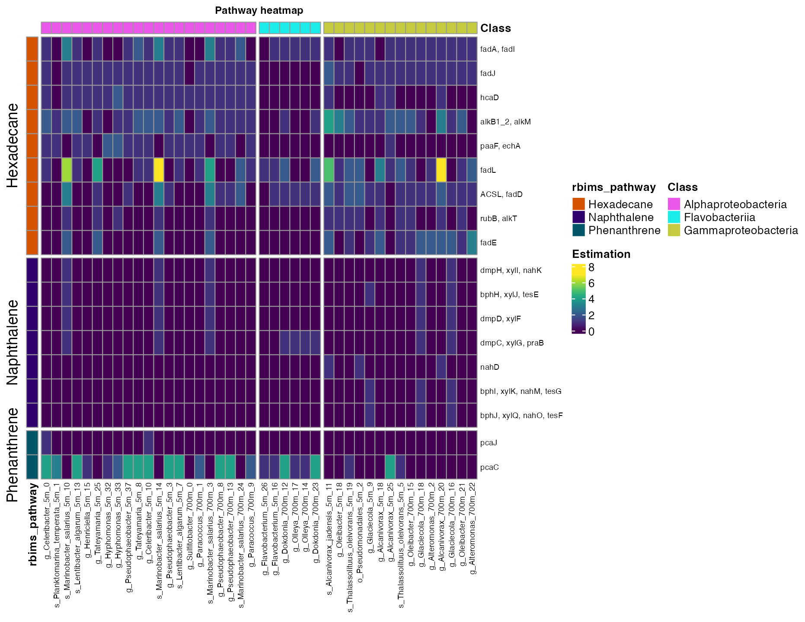
Figure 1. Abundance of hydrocarbon degradation pathways across bins.
plot_bubble can have multiple
arguments:
tibble_ko: tibble created by
mapping_ko/get_subset_*.
x_axis: bare column name (metabolism table) for the
X axis (typically Bin_name).
y_axis: bare column name (metabolism table) for the
Y axis (KO/pathway/module).
calc: Calculation to be performed. Valid values are
“Abundance”, “Binary”, “Percentage”, or “None”.
data_experiment: optional data. Frame with metadata
(joined by “Bin_name”).
color_character: bare column name in
metadata/tibble_ko for point color.
order_bins: optional character vector with desired
bin order.
order_metabolism: optional character vector with
desired metabolism order.
color_pallet: optional character vector of colors
for the color scale.
range_size: numeric length-2 vector for point size
range (default c(1,5)).
x_labs: logical; if TRUE uses x column name as x
label, else NULL.
y_labs: logical; if TRUE uses y column name as y
label, else NULL.
text_x: numeric size for x text; default 7.
text_y: numeric size for y text; default 7.
plot_bubble(tibble_ko = Energy_metabolisms_hydro,
x_axis = Bin_name,
y_axis = rbims_pathway,
analysis="KEGG",
calc="Percentage",
data_experiment = metadata_renamed,
text_x = 11,
text_y = 11,
color_character = Class,
range_size = c(1,15),
y_labs=TRUE,
x_labs=TRUE)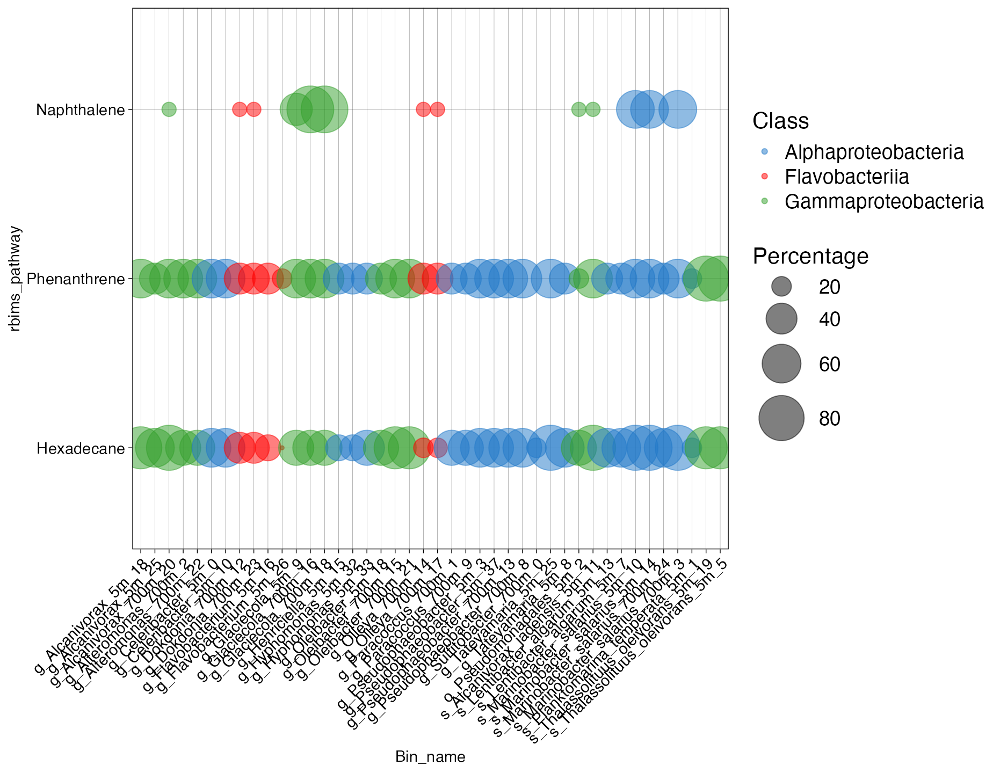
Figure 2. Coverage of hydrocarbon degradation pathways across bins.
In the same way we created a vector with the hydrocarbon degradation pathways from the internal rbims curated database, we can create a vector of specific KOs IDs or KEGG modules.
Carbon_fixation<-c("K01007", "K00626", "K01902", "K01595", "K01903", "K00170", "K00169", "K00171", "K00172", "K00241")
library(tidyr)
Carbon_fixation_subset<-ko_bin_mapp_renamed %>%
drop_na(KO) %>%
get_subset_pathway(KO, Carbon_fixation)
head(Carbon_fixation_subset)| Module | Module_description | Pathway | Pathway_description | Cycle | Pathway_cycle | Detail_cycle | Genes | Gene_description | Enzyme | KO | rbims_pathway | rbims_sub_pathway | g_Celeribacter_5m_0 | s_Planktomarina_temperata_5m_1 | s_Marinobacter_salarius_5m_10 | s_Alcanivorax_jadensis_5m_11 | s_Lentibacter_algarum_5m_13 | g_Henriciella_5m_15 | g_Oleibacter_5m_18 | s_Thalassolituus_oleivorans_5m_19 | o_Pseudomonadales_5m_2 | g_Tateyamaria_5m_25 | g_Flavobacterium_5m_26 | g_Hyphomonas_5m_32 | g_Hyphomonas_5m_33 | g_Pseudophaeobacter_5m_37 | g_Tateyamaria_5m_8 | g_Glaciecola_5m_9 | g_Celeribacter_5m_10 | s_Marinobacter_salarius_5m_14 | g_Flavobacterium_5m_16 | g_Alcanivorax_5m_18 | g_Alcanivorax_5m_25 | g_Pseudophaeobacter_5m_3 | s_Thalassolituus_oleivorans_5m_5 | s_Lentibacter_algarum_5m_7 | g_Sulfitobacter_700m_0 | g_Paracoccus_700m_1 | g_Dokdonia_700m_12 | g_Oleibacter_700m_15 | g_Olleya_700m_17 | g_Glaciecola_700m_18 | g_Alteromonas_700m_2 | g_Alcanivorax_700m_20 | s_Marinobacter_salarius_700m_3 | g_Pseudophaeobacter_700m_8 | g_Pseudophaeobacter_700m_13 | g_Olleya_700m_14 | g_Glaciecola_700m_16 | g_Oleibacter_700m_21 | g_Alteromonas_700m_22 | g_Dokdonia_700m_23 | s_Marinobacter_salarius_700m_24 | g_Paracoccus_700m_9 |
|---|---|---|---|---|---|---|---|---|---|---|---|---|---|---|---|---|---|---|---|---|---|---|---|---|---|---|---|---|---|---|---|---|---|---|---|---|---|---|---|---|---|---|---|---|---|---|---|---|---|---|---|---|---|---|
| M00088 | Ketone body biosynthesis, acetyl-CoA => acetoacetate/3-hydroxybutyrate/acetone | map00071 | Fatty acid degradation | Carbon fixation | Hydroxypropionate-hydroxybutylate cycle | E2.3.1.9, atoB; acetyl-CoA C-acetyltransferase [EC:2.3.1.9] | ACAT, atoB | acetyl-CoA C-acetyltransferase [EC:2.3.1.9] | ec:2.3.1.9 | K00626 | NA | NA | 4 | 4 | 11 | 7 | 5 | 4 | 3 | 5 | 5 | 7 | 0 | 4 | 5 | 6 | 9 | 2 | 4 | 11 | 2 | 6 | 6 | 6 | 5 | 5 | 3 | 5 | 3 | 5 | 2 | 3 | 4 | 6 | 11 | 6 | 6 | 2 | 3 | 5 | 5 | 3 | 5 | 5 |
| M00088 | Ketone body biosynthesis, acetyl-CoA => acetoacetate/3-hydroxybutyrate/acetone | map00071 | Fatty acid degradation | Carbon fixation | Dicarboxylate-hydroxybutyrate cycle | E2.3.1.9, atoB; acetyl-CoA C-acetyltransferase [EC:2.3.1.9] | ACAT, atoB | acetyl-CoA C-acetyltransferase [EC:2.3.1.9] | ec:2.3.1.9 | K00626 | NA | NA | 4 | 4 | 11 | 7 | 5 | 4 | 3 | 5 | 5 | 7 | 0 | 4 | 5 | 6 | 9 | 2 | 4 | 11 | 2 | 6 | 6 | 6 | 5 | 5 | 3 | 5 | 3 | 5 | 2 | 3 | 4 | 6 | 11 | 6 | 6 | 2 | 3 | 5 | 5 | 3 | 5 | 5 |
| M00095 | C5 isoprenoid biosynthesis, mevalonate pathway | map00071 | Fatty acid degradation | Carbon fixation | Hydroxypropionate-hydroxybutylate cycle | E2.3.1.9, atoB; acetyl-CoA C-acetyltransferase [EC:2.3.1.9] | ACAT, atoB | acetyl-CoA C-acetyltransferase [EC:2.3.1.9] | ec:2.3.1.9 | K00626 | NA | NA | 4 | 4 | 11 | 7 | 5 | 4 | 3 | 5 | 5 | 7 | 0 | 4 | 5 | 6 | 9 | 2 | 4 | 11 | 2 | 6 | 6 | 6 | 5 | 5 | 3 | 5 | 3 | 5 | 2 | 3 | 4 | 6 | 11 | 6 | 6 | 2 | 3 | 5 | 5 | 3 | 5 | 5 |
| M00095 | C5 isoprenoid biosynthesis, mevalonate pathway | map00071 | Fatty acid degradation | Carbon fixation | Dicarboxylate-hydroxybutyrate cycle | E2.3.1.9, atoB; acetyl-CoA C-acetyltransferase [EC:2.3.1.9] | ACAT, atoB | acetyl-CoA C-acetyltransferase [EC:2.3.1.9] | ec:2.3.1.9 | K00626 | NA | NA | 4 | 4 | 11 | 7 | 5 | 4 | 3 | 5 | 5 | 7 | 0 | 4 | 5 | 6 | 9 | 2 | 4 | 11 | 2 | 6 | 6 | 6 | 5 | 5 | 3 | 5 | 3 | 5 | 2 | 3 | 4 | 6 | 11 | 6 | 6 | 2 | 3 | 5 | 5 | 3 | 5 | 5 |
| M00373 | Ethylmalonyl pathway | map00071 | Fatty acid degradation | Carbon fixation | Hydroxypropionate-hydroxybutylate cycle | E2.3.1.9, atoB; acetyl-CoA C-acetyltransferase [EC:2.3.1.9] | ACAT, atoB | acetyl-CoA C-acetyltransferase [EC:2.3.1.9] | ec:2.3.1.9 | K00626 | NA | NA | 4 | 4 | 11 | 7 | 5 | 4 | 3 | 5 | 5 | 7 | 0 | 4 | 5 | 6 | 9 | 2 | 4 | 11 | 2 | 6 | 6 | 6 | 5 | 5 | 3 | 5 | 3 | 5 | 2 | 3 | 4 | 6 | 11 | 6 | 6 | 2 | 3 | 5 | 5 | 3 | 5 | 5 |
| M00373 | Ethylmalonyl pathway | map00071 | Fatty acid degradation | Carbon fixation | Dicarboxylate-hydroxybutyrate cycle | E2.3.1.9, atoB; acetyl-CoA C-acetyltransferase [EC:2.3.1.9] | ACAT, atoB | acetyl-CoA C-acetyltransferase [EC:2.3.1.9] | ec:2.3.1.9 | K00626 | NA | NA | 4 | 4 | 11 | 7 | 5 | 4 | 3 | 5 | 5 | 7 | 0 | 4 | 5 | 6 | 9 | 2 | 4 | 11 | 2 | 6 | 6 | 6 | 5 | 5 | 3 | 5 | 3 | 5 | 2 | 3 | 4 | 6 | 11 | 6 | 6 | 2 | 3 | 5 | 5 | 3 | 5 | 5 |
| M00374 | Dicarboxylate-hydroxybutyrate cycle | map00071 | Fatty acid degradation | Carbon fixation | Hydroxypropionate-hydroxybutylate cycle | E2.3.1.9, atoB; acetyl-CoA C-acetyltransferase [EC:2.3.1.9] | ACAT, atoB | acetyl-CoA C-acetyltransferase [EC:2.3.1.9] | ec:2.3.1.9 | K00626 | NA | NA | 4 | 4 | 11 | 7 | 5 | 4 | 3 | 5 | 5 | 7 | 0 | 4 | 5 | 6 | 9 | 2 | 4 | 11 | 2 | 6 | 6 | 6 | 5 | 5 | 3 | 5 | 3 | 5 | 2 | 3 | 4 | 6 | 11 | 6 | 6 | 2 | 3 | 5 | 5 | 3 | 5 | 5 |
| M00374 | Dicarboxylate-hydroxybutyrate cycle | map00071 | Fatty acid degradation | Carbon fixation | Dicarboxylate-hydroxybutyrate cycle | E2.3.1.9, atoB; acetyl-CoA C-acetyltransferase [EC:2.3.1.9] | ACAT, atoB | acetyl-CoA C-acetyltransferase [EC:2.3.1.9] | ec:2.3.1.9 | K00626 | NA | NA | 4 | 4 | 11 | 7 | 5 | 4 | 3 | 5 | 5 | 7 | 0 | 4 | 5 | 6 | 9 | 2 | 4 | 11 | 2 | 6 | 6 | 6 | 5 | 5 | 3 | 5 | 3 | 5 | 2 | 3 | 4 | 6 | 11 | 6 | 6 | 2 | 3 | 5 | 5 | 3 | 5 | 5 |
| M00375 | Hydroxypropionate-hydroxybutylate cycle | map00071 | Fatty acid degradation | Carbon fixation | Hydroxypropionate-hydroxybutylate cycle | E2.3.1.9, atoB; acetyl-CoA C-acetyltransferase [EC:2.3.1.9] | ACAT, atoB | acetyl-CoA C-acetyltransferase [EC:2.3.1.9] | ec:2.3.1.9 | K00626 | NA | NA | 4 | 4 | 11 | 7 | 5 | 4 | 3 | 5 | 5 | 7 | 0 | 4 | 5 | 6 | 9 | 2 | 4 | 11 | 2 | 6 | 6 | 6 | 5 | 5 | 3 | 5 | 3 | 5 | 2 | 3 | 4 | 6 | 11 | 6 | 6 | 2 | 3 | 5 | 5 | 3 | 5 | 5 |
| M00375 | Hydroxypropionate-hydroxybutylate cycle | map00071 | Fatty acid degradation | Carbon fixation | Dicarboxylate-hydroxybutyrate cycle | E2.3.1.9, atoB; acetyl-CoA C-acetyltransferase [EC:2.3.1.9] | ACAT, atoB | acetyl-CoA C-acetyltransferase [EC:2.3.1.9] | ec:2.3.1.9 | K00626 | NA | NA | 4 | 4 | 11 | 7 | 5 | 4 | 3 | 5 | 5 | 7 | 0 | 4 | 5 | 6 | 9 | 2 | 4 | 11 | 2 | 6 | 6 | 6 | 5 | 5 | 3 | 5 | 3 | 5 | 2 | 3 | 4 | 6 | 11 | 6 | 6 | 2 | 3 | 5 | 5 | 3 | 5 | 5 |
plot_heatmap
plot_heatmap(tibble_ko=Carbon_fixation_subset,
y_axis=Genes,
analysis = "KEGG",
calc="Abundance")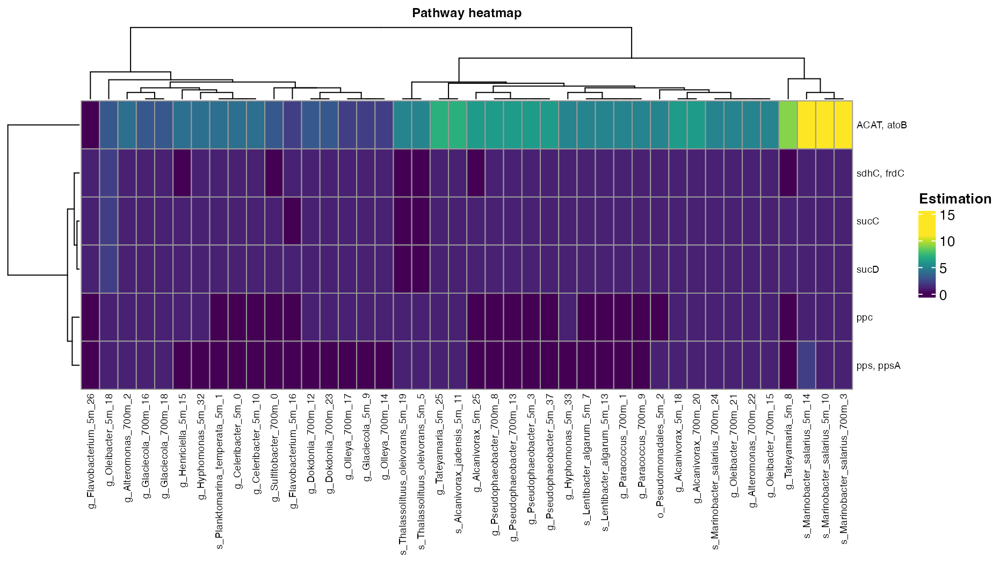
Figure 3. Abundance of the Carbon fixation pathways across bins.
In this example, we will use energy metabolism to explore the rest of the functions.
Other_energy<-c("Fermentation", "Sulfur metabolism", "Methane metabolism")
library(tidyr)
Energy_metabolisms<-ko_bin_mapp_renamed %>%
drop_na(Cycle) %>%
get_subset_pathway(Cycle, Other_energy)
head(Energy_metabolisms)| Module | Module_description | Pathway | Pathway_description | Cycle | Pathway_cycle | Detail_cycle | Genes | Gene_description | Enzyme | KO | rbims_pathway | rbims_sub_pathway | g_Celeribacter_5m_0 | s_Planktomarina_temperata_5m_1 | s_Marinobacter_salarius_5m_10 | s_Alcanivorax_jadensis_5m_11 | s_Lentibacter_algarum_5m_13 | g_Henriciella_5m_15 | g_Oleibacter_5m_18 | s_Thalassolituus_oleivorans_5m_19 | o_Pseudomonadales_5m_2 | g_Tateyamaria_5m_25 | g_Flavobacterium_5m_26 | g_Hyphomonas_5m_32 | g_Hyphomonas_5m_33 | g_Pseudophaeobacter_5m_37 | g_Tateyamaria_5m_8 | g_Glaciecola_5m_9 | g_Celeribacter_5m_10 | s_Marinobacter_salarius_5m_14 | g_Flavobacterium_5m_16 | g_Alcanivorax_5m_18 | g_Alcanivorax_5m_25 | g_Pseudophaeobacter_5m_3 | s_Thalassolituus_oleivorans_5m_5 | s_Lentibacter_algarum_5m_7 | g_Sulfitobacter_700m_0 | g_Paracoccus_700m_1 | g_Dokdonia_700m_12 | g_Oleibacter_700m_15 | g_Olleya_700m_17 | g_Glaciecola_700m_18 | g_Alteromonas_700m_2 | g_Alcanivorax_700m_20 | s_Marinobacter_salarius_700m_3 | g_Pseudophaeobacter_700m_8 | g_Pseudophaeobacter_700m_13 | g_Olleya_700m_14 | g_Glaciecola_700m_16 | g_Oleibacter_700m_21 | g_Alteromonas_700m_22 | g_Dokdonia_700m_23 | s_Marinobacter_salarius_700m_24 | g_Paracoccus_700m_9 |
|---|---|---|---|---|---|---|---|---|---|---|---|---|---|---|---|---|---|---|---|---|---|---|---|---|---|---|---|---|---|---|---|---|---|---|---|---|---|---|---|---|---|---|---|---|---|---|---|---|---|---|---|---|---|---|
| M00135 | GABA biosynthesis, eukaryotes, putrescine => GABA | map00010 | Glycolysis / Gluconeogenesis | Fermentation | Mixed acid: ethanol, acetate to acetylaldehyde | aldehyde dehydrogenase (NAD+) | ALDH | aldehyde dehydrogenase (NAD+) [EC:1.2.1.3] | ec:1.2.1.3 | K00128 | NA | NA | 1 | 0 | 0 | 0 | 1 | 0 | 0 | 0 | 0 | 0 | 0 | 0 | 0 | 0 | 1 | 0 | 0 | 0 | 0 | 0 | 1 | 0 | 0 | 1 | 1 | 1 | 0 | 0 | 0 | 0 | 0 | 0 | 0 | 1 | 1 | 0 | 0 | 0 | 0 | 0 | 0 | 1 |
| M00913 | Pantothenate biosynthesis, 2-oxoisovalerate/spermine => pantothenate | map00010 | Glycolysis / Gluconeogenesis | Fermentation | Mixed acid: ethanol, acetate to acetylaldehyde | aldehyde dehydrogenase (NAD+) | ALDH | aldehyde dehydrogenase (NAD+) [EC:1.2.1.3] | ec:1.2.1.3 | K00128 | NA | NA | 1 | 0 | 0 | 0 | 1 | 0 | 0 | 0 | 0 | 0 | 0 | 0 | 0 | 0 | 1 | 0 | 0 | 0 | 0 | 0 | 1 | 0 | 0 | 1 | 1 | 1 | 0 | 0 | 0 | 0 | 0 | 0 | 0 | 1 | 1 | 0 | 0 | 0 | 0 | 0 | 0 | 1 |
| M01047 | Juvenile hormone biosynthesis, insects, farnesyl-PP => juvenile hormone III | map00010 | Glycolysis / Gluconeogenesis | Fermentation | Mixed acid: ethanol, acetate to acetylaldehyde | aldehyde dehydrogenase (NAD+) | ALDH | aldehyde dehydrogenase (NAD+) [EC:1.2.1.3] | ec:1.2.1.3 | K00128 | NA | NA | 1 | 0 | 0 | 0 | 1 | 0 | 0 | 0 | 0 | 0 | 0 | 0 | 0 | 0 | 1 | 0 | 0 | 0 | 0 | 0 | 1 | 0 | 0 | 1 | 1 | 1 | 0 | 0 | 0 | 0 | 0 | 0 | 0 | 1 | 1 | 0 | 0 | 0 | 0 | 0 | 0 | 1 |
| M00135 | GABA biosynthesis, eukaryotes, putrescine => GABA | map00053 | Ascorbate and aldarate metabolism | Fermentation | Mixed acid: ethanol, acetate to acetylaldehyde | aldehyde dehydrogenase (NAD+) | ALDH | aldehyde dehydrogenase (NAD+) [EC:1.2.1.3] | ec:1.2.1.3 | K00128 | NA | NA | 1 | 0 | 0 | 0 | 1 | 0 | 0 | 0 | 0 | 0 | 0 | 0 | 0 | 0 | 1 | 0 | 0 | 0 | 0 | 0 | 1 | 0 | 0 | 1 | 1 | 1 | 0 | 0 | 0 | 0 | 0 | 0 | 0 | 1 | 1 | 0 | 0 | 0 | 0 | 0 | 0 | 1 |
| M00913 | Pantothenate biosynthesis, 2-oxoisovalerate/spermine => pantothenate | map00053 | Ascorbate and aldarate metabolism | Fermentation | Mixed acid: ethanol, acetate to acetylaldehyde | aldehyde dehydrogenase (NAD+) | ALDH | aldehyde dehydrogenase (NAD+) [EC:1.2.1.3] | ec:1.2.1.3 | K00128 | NA | NA | 1 | 0 | 0 | 0 | 1 | 0 | 0 | 0 | 0 | 0 | 0 | 0 | 0 | 0 | 1 | 0 | 0 | 0 | 0 | 0 | 1 | 0 | 0 | 1 | 1 | 1 | 0 | 0 | 0 | 0 | 0 | 0 | 0 | 1 | 1 | 0 | 0 | 0 | 0 | 0 | 0 | 1 |
| M01047 | Juvenile hormone biosynthesis, insects, farnesyl-PP => juvenile hormone III | map00053 | Ascorbate and aldarate metabolism | Fermentation | Mixed acid: ethanol, acetate to acetylaldehyde | aldehyde dehydrogenase (NAD+) | ALDH | aldehyde dehydrogenase (NAD+) [EC:1.2.1.3] | ec:1.2.1.3 | K00128 | NA | NA | 1 | 0 | 0 | 0 | 1 | 0 | 0 | 0 | 0 | 0 | 0 | 0 | 0 | 0 | 1 | 0 | 0 | 0 | 0 | 0 | 1 | 0 | 0 | 1 | 1 | 1 | 0 | 0 | 0 | 0 | 0 | 0 | 0 | 1 | 1 | 0 | 0 | 0 | 0 | 0 | 0 | 1 |
| M00135 | GABA biosynthesis, eukaryotes, putrescine => GABA | map00071 | Fatty acid degradation | Fermentation | Mixed acid: ethanol, acetate to acetylaldehyde | aldehyde dehydrogenase (NAD+) | ALDH | aldehyde dehydrogenase (NAD+) [EC:1.2.1.3] | ec:1.2.1.3 | K00128 | NA | NA | 1 | 0 | 0 | 0 | 1 | 0 | 0 | 0 | 0 | 0 | 0 | 0 | 0 | 0 | 1 | 0 | 0 | 0 | 0 | 0 | 1 | 0 | 0 | 1 | 1 | 1 | 0 | 0 | 0 | 0 | 0 | 0 | 0 | 1 | 1 | 0 | 0 | 0 | 0 | 0 | 0 | 1 |
| M00913 | Pantothenate biosynthesis, 2-oxoisovalerate/spermine => pantothenate | map00071 | Fatty acid degradation | Fermentation | Mixed acid: ethanol, acetate to acetylaldehyde | aldehyde dehydrogenase (NAD+) | ALDH | aldehyde dehydrogenase (NAD+) [EC:1.2.1.3] | ec:1.2.1.3 | K00128 | NA | NA | 1 | 0 | 0 | 0 | 1 | 0 | 0 | 0 | 0 | 0 | 0 | 0 | 0 | 0 | 1 | 0 | 0 | 0 | 0 | 0 | 1 | 0 | 0 | 1 | 1 | 1 | 0 | 0 | 0 | 0 | 0 | 0 | 0 | 1 | 1 | 0 | 0 | 0 | 0 | 0 | 0 | 1 |
| M01047 | Juvenile hormone biosynthesis, insects, farnesyl-PP => juvenile hormone III | map00071 | Fatty acid degradation | Fermentation | Mixed acid: ethanol, acetate to acetylaldehyde | aldehyde dehydrogenase (NAD+) | ALDH | aldehyde dehydrogenase (NAD+) [EC:1.2.1.3] | ec:1.2.1.3 | K00128 | NA | NA | 1 | 0 | 0 | 0 | 1 | 0 | 0 | 0 | 0 | 0 | 0 | 0 | 0 | 0 | 1 | 0 | 0 | 0 | 0 | 0 | 1 | 0 | 0 | 1 | 1 | 1 | 0 | 0 | 0 | 0 | 0 | 0 | 0 | 1 | 1 | 0 | 0 | 0 | 0 | 0 | 0 | 1 |
| M00135 | GABA biosynthesis, eukaryotes, putrescine => GABA | map00280 | Valine, leucine and isoleucine degradation | Fermentation | Mixed acid: ethanol, acetate to acetylaldehyde | aldehyde dehydrogenase (NAD+) | ALDH | aldehyde dehydrogenase (NAD+) [EC:1.2.1.3] | ec:1.2.1.3 | K00128 | NA | NA | 1 | 0 | 0 | 0 | 1 | 0 | 0 | 0 | 0 | 0 | 0 | 0 | 0 | 0 | 1 | 0 | 0 | 0 | 0 | 0 | 1 | 0 | 0 | 1 | 1 | 1 | 0 | 0 | 0 | 0 | 0 | 0 | 0 | 1 | 1 | 0 | 0 | 0 | 0 | 0 | 0 | 1 |
plot_heatmap
plot_heatmap(tibble_ko=Energy_metabolisms,
y_axis=Pathway_cycle,
order_y = Cycle,
analysis = "KEGG",
calc="Percentage")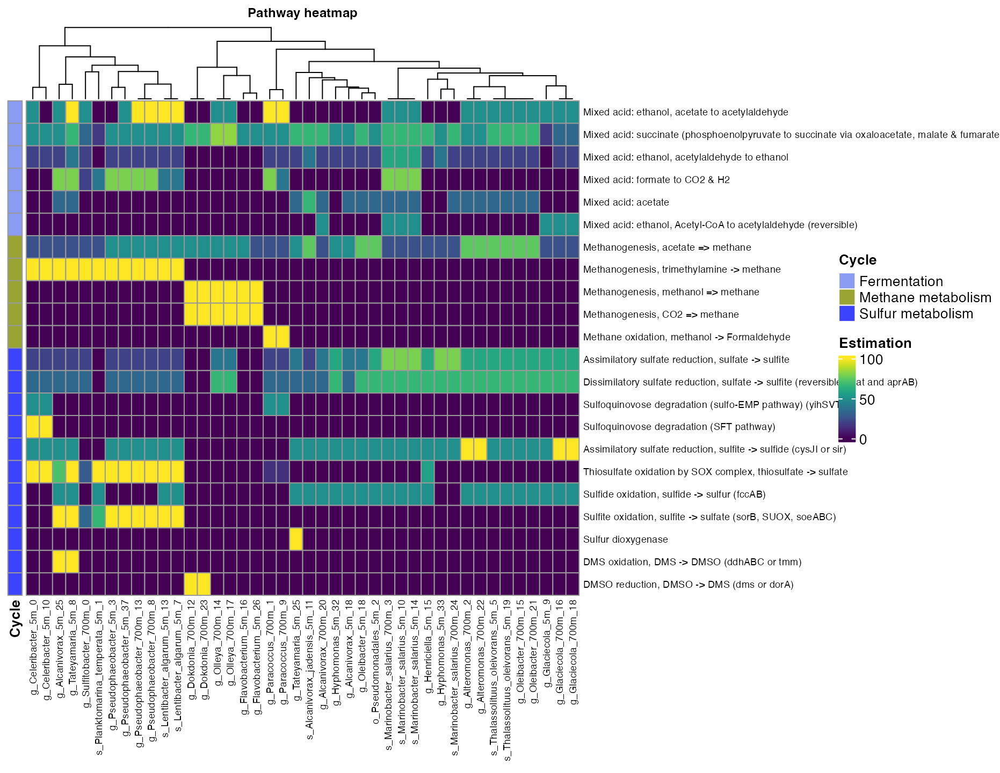
Figure 4. Coverage of mayor metabolic pathways across bins.
plot_heatmap(tibble_ko=Energy_metabolisms,
y_axis=Pathway_cycle,
data_experiment=metadata_renamed,
order_x = Depth,
analysis = "KEGG",
calc="Percentage")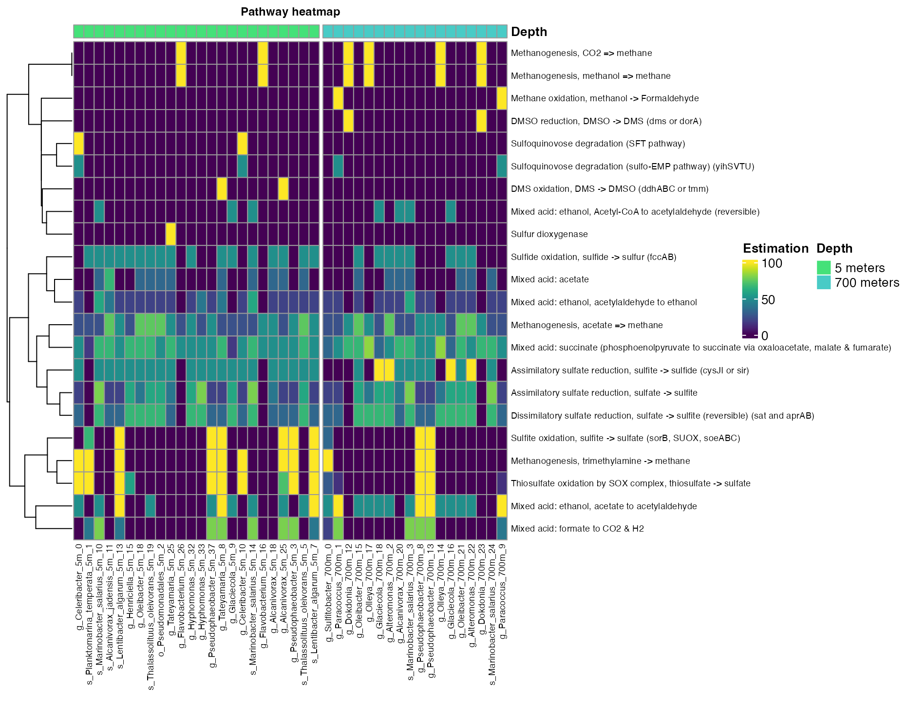
Figure 5. Coverage of mayor metabolic pathways across bins in different depths.
plot_heatmap(tibble_ko=Energy_metabolisms,
y_axis=Pathway_cycle,
order_y = Cycle,
split_y = TRUE,
analysis = "KEGG",
calc="Percentage")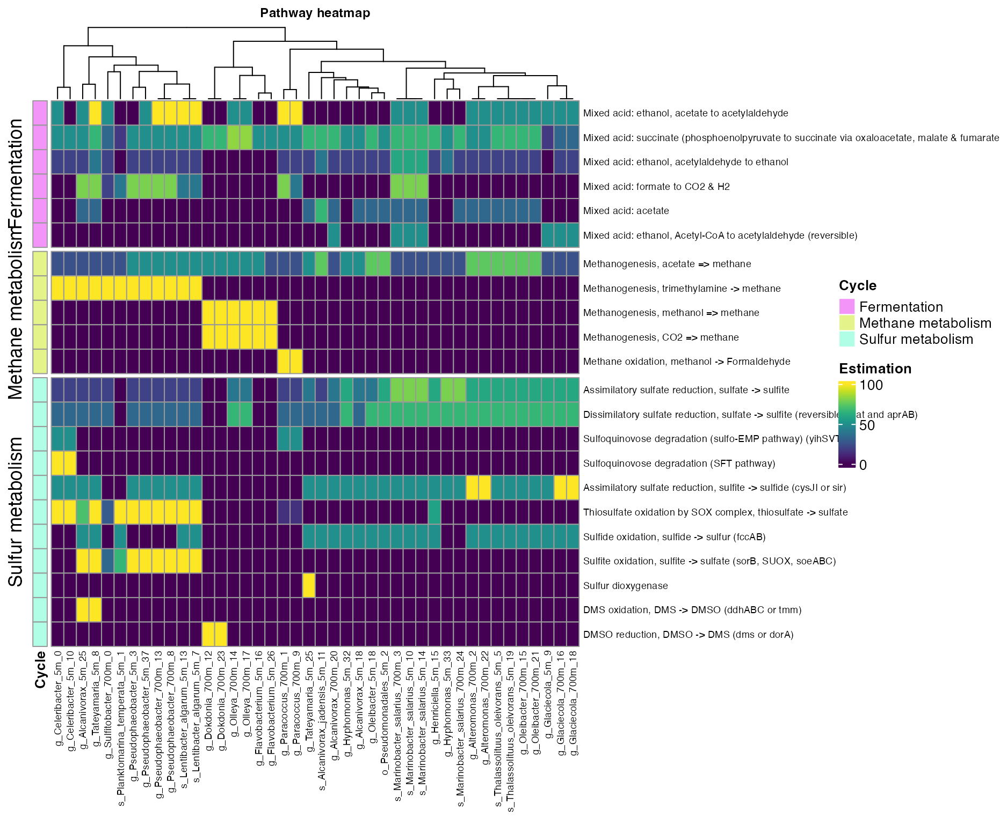
Figure 6. Coverage of mayor metabolic pathways across bins.
plot_heatmap(tibble_ko=Energy_metabolisms,
data_experiment = metadata_renamed,
y_axis=Pathway_cycle,
order_y = Cycle,
order_x = Class,
split_y = TRUE,
analysis = "KEGG",
calc="Percentage")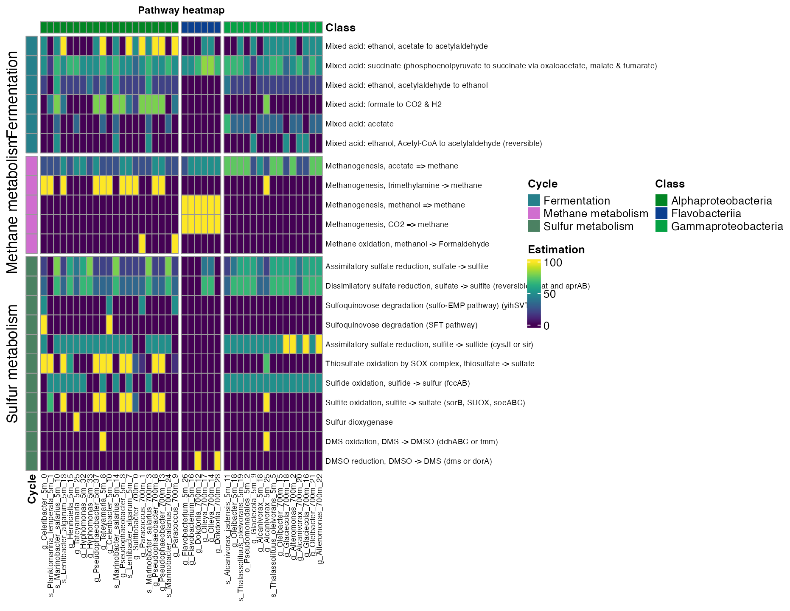
Figure 7. Coverage of mayor metabolic pathways across taxonomic class.
get_subset_unique
This function identifies the IDs that are only present in a particular metadata group (i.e. KOs only present in environment “a” and absent in the rest of the environments).
five_meters <- get_subset_unique(tibble_rbims = ko_bin_mapp_renamed,
data_experiment = metadata_renamed,
experiment_col = Depth,
experiment_col_element = "5 meters",
analysis= "KEGG")
unique_5_meters <- five_meters %>%
select(where(~ any(. != 0)))
head(unique_5_meters)| Module | Module_description | Pathway | Pathway_description | Cycle | Pathway_cycle | Detail_cycle | Genes | Gene_description | Enzyme | KO | rbims_pathway | rbims_sub_pathway | g_Celeribacter_5m_0 | s_Planktomarina_temperata_5m_1 | s_Alcanivorax_jadensis_5m_11 | s_Lentibacter_algarum_5m_13 | g_Henriciella_5m_15 | g_Oleibacter_5m_18 | s_Thalassolituus_oleivorans_5m_19 | o_Pseudomonadales_5m_2 | g_Tateyamaria_5m_25 | g_Flavobacterium_5m_26 | g_Hyphomonas_5m_32 | g_Hyphomonas_5m_33 | g_Pseudophaeobacter_5m_37 | g_Tateyamaria_5m_8 | g_Celeribacter_5m_10 | s_Marinobacter_salarius_5m_14 | g_Flavobacterium_5m_16 | g_Alcanivorax_5m_18 | g_Alcanivorax_5m_25 | g_Pseudophaeobacter_5m_3 | s_Thalassolituus_oleivorans_5m_5 | s_Lentibacter_algarum_5m_7 |
|---|---|---|---|---|---|---|---|---|---|---|---|---|---|---|---|---|---|---|---|---|---|---|---|---|---|---|---|---|---|---|---|---|---|---|
| NA | NA | NA | NA | NA | NA | NA | ABC.SS.A | simple sugar transport system ATP-binding protein [EC:7.5.2.-] | NA | K02056 | NA | NA | 1 | 0 | 0 | 0 | 0 | 0 | 0 | 0 | 0 | 0 | 0 | 0 | 0 | 0 | 0 | 0 | 0 | 0 | 0 | 0 | 0 | 0 |
| NA | NA | map00362 | Benzoate degradation | NA | NA | NA | pcaI | 3-oxoadipate CoA-transferase, alpha subunit [EC:2.8.3.6] | ec:2.8.3.6 | K01031 | NA | NA | 1 | 0 | 0 | 0 | 0 | 0 | 0 | 0 | 0 | 0 | 0 | 0 | 0 | 0 | 1 | 0 | 0 | 0 | 0 | 0 | 0 | 0 |
| NA | NA | map01100 | Metabolic pathways | NA | NA | NA | pcaI | 3-oxoadipate CoA-transferase, alpha subunit [EC:2.8.3.6] | ec:2.8.3.6 | K01031 | NA | NA | 1 | 0 | 0 | 0 | 0 | 0 | 0 | 0 | 0 | 0 | 0 | 0 | 0 | 0 | 1 | 0 | 0 | 0 | 0 | 0 | 0 | 0 |
| NA | NA | map01120 | Microbial metabolism in diverse environments | NA | NA | NA | pcaI | 3-oxoadipate CoA-transferase, alpha subunit [EC:2.8.3.6] | ec:2.8.3.6 | K01031 | NA | NA | 1 | 0 | 0 | 0 | 0 | 0 | 0 | 0 | 0 | 0 | 0 | 0 | 0 | 0 | 1 | 0 | 0 | 0 | 0 | 0 | 0 | 0 |
| NA | NA | map00362 | Benzoate degradation | NA | NA | NA | pcaJ | 3-oxoadipate CoA-transferase, beta subunit [EC:2.8.3.6] | ec:2.8.3.6 | K01032 | Phenanthrene | 3-oxoadipate CoA-transferase, beta subunit | 1 | 0 | 0 | 0 | 0 | 0 | 0 | 0 | 0 | 0 | 0 | 0 | 0 | 0 | 1 | 0 | 0 | 0 | 0 | 0 | 0 | 0 |
| NA | NA | map01100 | Metabolic pathways | NA | NA | NA | pcaJ | 3-oxoadipate CoA-transferase, beta subunit [EC:2.8.3.6] | ec:2.8.3.6 | K01032 | Phenanthrene | 3-oxoadipate CoA-transferase, beta subunit | 1 | 0 | 0 | 0 | 0 | 0 | 0 | 0 | 0 | 0 | 0 | 0 | 0 | 0 | 1 | 0 | 0 | 0 | 0 | 0 | 0 | 0 |
| NA | NA | map01120 | Microbial metabolism in diverse environments | NA | NA | NA | pcaJ | 3-oxoadipate CoA-transferase, beta subunit [EC:2.8.3.6] | ec:2.8.3.6 | K01032 | Phenanthrene | 3-oxoadipate CoA-transferase, beta subunit | 1 | 0 | 0 | 0 | 0 | 0 | 0 | 0 | 0 | 0 | 0 | 0 | 0 | 0 | 1 | 0 | 0 | 0 | 0 | 0 | 0 | 0 |
| NA | NA | map00362 | Benzoate degradation | NA | NA | NA | galB | 4-oxalomesaconate hydratase [EC:4.2.1.83] | ec:4.2.1.83 | K16515 | NA | NA | 1 | 0 | 0 | 0 | 0 | 0 | 0 | 0 | 0 | 0 | 0 | 0 | 0 | 0 | 1 | 0 | 0 | 0 | 0 | 0 | 0 | 0 |
| NA | NA | map01100 | Metabolic pathways | NA | NA | NA | galB | 4-oxalomesaconate hydratase [EC:4.2.1.83] | ec:4.2.1.83 | K16515 | NA | NA | 1 | 0 | 0 | 0 | 0 | 0 | 0 | 0 | 0 | 0 | 0 | 0 | 0 | 0 | 1 | 0 | 0 | 0 | 0 | 0 | 0 | 0 |
| NA | NA | map00362 | Benzoate degradation | NA | NA | NA | ligI | 2-pyrone-4,6-dicarboxylate lactonase [EC:3.1.1.57] | ec:3.1.1.57 | K10221 | NA | NA | 2 | 0 | 0 | 0 | 0 | 0 | 0 | 0 | 0 | 0 | 0 | 0 | 0 | 0 | 2 | 0 | 0 | 0 | 0 | 0 | 0 | 0 |
The output can be plot using plot_heatmap or
plor_bubble as previously explained.
plot_heatmap(tibble_ko=unique_5_meters,
data_experiment = metadata_renamed,
y_axis=Genes,
order_y = Cycle,
order_x = Class,
split_y = TRUE,
analysis = "KEGG",
calc="Abundance")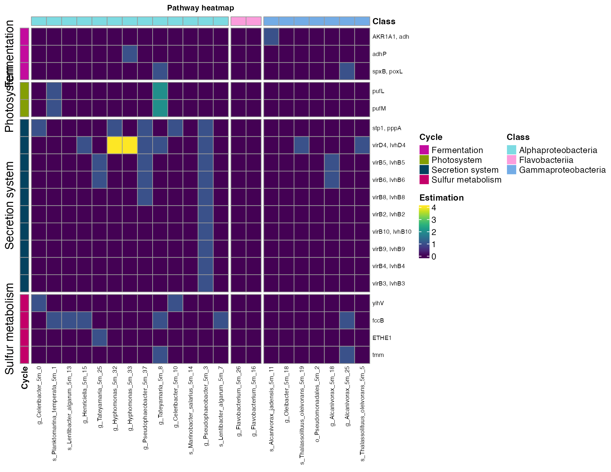
Figure 8. Metabolic pathways across bins from the five meters sampling site.
get_subset_pca
get_subset_pca: performs a PCA analysis to reduce the
dimensions of the most contributing KEGG pathways, resulting in a new
table with the most represented KEGG pathways of the bins/genome
samples.
important_pathways <- get_subset_pca(tibble_rbims=ko_bin_mapp_renamed,
cos2_val=0.96,
analysis="KEGG")
head(important_pathways)| Module | Module_description | Pathway | Pathway_description | Cycle | Pathway_cycle | Detail_cycle | Genes | Gene_description | Enzyme | KO | rbims_pathway | rbims_sub_pathway | g_Celeribacter_5m_0 | s_Planktomarina_temperata_5m_1 | s_Marinobacter_salarius_5m_10 | s_Alcanivorax_jadensis_5m_11 | s_Lentibacter_algarum_5m_13 | g_Henriciella_5m_15 | g_Oleibacter_5m_18 | s_Thalassolituus_oleivorans_5m_19 | o_Pseudomonadales_5m_2 | g_Tateyamaria_5m_25 | g_Flavobacterium_5m_26 | g_Hyphomonas_5m_32 | g_Hyphomonas_5m_33 | g_Pseudophaeobacter_5m_37 | g_Tateyamaria_5m_8 | g_Glaciecola_5m_9 | g_Celeribacter_5m_10 | s_Marinobacter_salarius_5m_14 | g_Flavobacterium_5m_16 | g_Alcanivorax_5m_18 | g_Alcanivorax_5m_25 | g_Pseudophaeobacter_5m_3 | s_Thalassolituus_oleivorans_5m_5 | s_Lentibacter_algarum_5m_7 | g_Sulfitobacter_700m_0 | g_Paracoccus_700m_1 | g_Dokdonia_700m_12 | g_Oleibacter_700m_15 | g_Olleya_700m_17 | g_Glaciecola_700m_18 | g_Alteromonas_700m_2 | g_Alcanivorax_700m_20 | s_Marinobacter_salarius_700m_3 | g_Pseudophaeobacter_700m_8 | g_Pseudophaeobacter_700m_13 | g_Olleya_700m_14 | g_Glaciecola_700m_16 | g_Oleibacter_700m_21 | g_Alteromonas_700m_22 | g_Dokdonia_700m_23 | s_Marinobacter_salarius_700m_24 | g_Paracoccus_700m_9 |
|---|---|---|---|---|---|---|---|---|---|---|---|---|---|---|---|---|---|---|---|---|---|---|---|---|---|---|---|---|---|---|---|---|---|---|---|---|---|---|---|---|---|---|---|---|---|---|---|---|---|---|---|---|---|---|
| M00088 | Ketone body biosynthesis, acetyl-CoA => acetoacetate/3-hydroxybutyrate/acetone | map00071 | Fatty acid degradation | Carbon fixation | Hydroxypropionate-hydroxybutylate cycle | E2.3.1.9, atoB; acetyl-CoA C-acetyltransferase [EC:2.3.1.9] | ACAT, atoB | acetyl-CoA C-acetyltransferase [EC:2.3.1.9] | ec:2.3.1.9 | K00626 | NA | NA | 4 | 4 | 11 | 7 | 5 | 4 | 3 | 5 | 5 | 7 | 0 | 4 | 5 | 6 | 9 | 2 | 4 | 11 | 2 | 6 | 6 | 6 | 5 | 5 | 3 | 5 | 3 | 5 | 2 | 3 | 4 | 6 | 11 | 6 | 6 | 2 | 3 | 5 | 5 | 3 | 5 | 5 |
| M00088 | Ketone body biosynthesis, acetyl-CoA => acetoacetate/3-hydroxybutyrate/acetone | map00071 | Fatty acid degradation | Carbon fixation | Dicarboxylate-hydroxybutyrate cycle | E2.3.1.9, atoB; acetyl-CoA C-acetyltransferase [EC:2.3.1.9] | ACAT, atoB | acetyl-CoA C-acetyltransferase [EC:2.3.1.9] | ec:2.3.1.9 | K00626.1 | NA | NA | 4 | 4 | 11 | 7 | 5 | 4 | 3 | 5 | 5 | 7 | 0 | 4 | 5 | 6 | 9 | 2 | 4 | 11 | 2 | 6 | 6 | 6 | 5 | 5 | 3 | 5 | 3 | 5 | 2 | 3 | 4 | 6 | 11 | 6 | 6 | 2 | 3 | 5 | 5 | 3 | 5 | 5 |
| M00095 | C5 isoprenoid biosynthesis, mevalonate pathway | map00071 | Fatty acid degradation | Carbon fixation | Hydroxypropionate-hydroxybutylate cycle | E2.3.1.9, atoB; acetyl-CoA C-acetyltransferase [EC:2.3.1.9] | ACAT, atoB | acetyl-CoA C-acetyltransferase [EC:2.3.1.9] | ec:2.3.1.9 | K00626.2 | NA | NA | 4 | 4 | 11 | 7 | 5 | 4 | 3 | 5 | 5 | 7 | 0 | 4 | 5 | 6 | 9 | 2 | 4 | 11 | 2 | 6 | 6 | 6 | 5 | 5 | 3 | 5 | 3 | 5 | 2 | 3 | 4 | 6 | 11 | 6 | 6 | 2 | 3 | 5 | 5 | 3 | 5 | 5 |
| M00095 | C5 isoprenoid biosynthesis, mevalonate pathway | map00071 | Fatty acid degradation | Carbon fixation | Dicarboxylate-hydroxybutyrate cycle | E2.3.1.9, atoB; acetyl-CoA C-acetyltransferase [EC:2.3.1.9] | ACAT, atoB | acetyl-CoA C-acetyltransferase [EC:2.3.1.9] | ec:2.3.1.9 | K00626.3 | NA | NA | 4 | 4 | 11 | 7 | 5 | 4 | 3 | 5 | 5 | 7 | 0 | 4 | 5 | 6 | 9 | 2 | 4 | 11 | 2 | 6 | 6 | 6 | 5 | 5 | 3 | 5 | 3 | 5 | 2 | 3 | 4 | 6 | 11 | 6 | 6 | 2 | 3 | 5 | 5 | 3 | 5 | 5 |
| M00373 | Ethylmalonyl pathway | map00071 | Fatty acid degradation | Carbon fixation | Hydroxypropionate-hydroxybutylate cycle | E2.3.1.9, atoB; acetyl-CoA C-acetyltransferase [EC:2.3.1.9] | ACAT, atoB | acetyl-CoA C-acetyltransferase [EC:2.3.1.9] | ec:2.3.1.9 | K00626.4 | NA | NA | 4 | 4 | 11 | 7 | 5 | 4 | 3 | 5 | 5 | 7 | 0 | 4 | 5 | 6 | 9 | 2 | 4 | 11 | 2 | 6 | 6 | 6 | 5 | 5 | 3 | 5 | 3 | 5 | 2 | 3 | 4 | 6 | 11 | 6 | 6 | 2 | 3 | 5 | 5 | 3 | 5 | 5 |
| M00373 | Ethylmalonyl pathway | map00071 | Fatty acid degradation | Carbon fixation | Dicarboxylate-hydroxybutyrate cycle | E2.3.1.9, atoB; acetyl-CoA C-acetyltransferase [EC:2.3.1.9] | ACAT, atoB | acetyl-CoA C-acetyltransferase [EC:2.3.1.9] | ec:2.3.1.9 | K00626.5 | NA | NA | 4 | 4 | 11 | 7 | 5 | 4 | 3 | 5 | 5 | 7 | 0 | 4 | 5 | 6 | 9 | 2 | 4 | 11 | 2 | 6 | 6 | 6 | 5 | 5 | 3 | 5 | 3 | 5 | 2 | 3 | 4 | 6 | 11 | 6 | 6 | 2 | 3 | 5 | 5 | 3 | 5 | 5 |
| M00374 | Dicarboxylate-hydroxybutyrate cycle | map00071 | Fatty acid degradation | Carbon fixation | Hydroxypropionate-hydroxybutylate cycle | E2.3.1.9, atoB; acetyl-CoA C-acetyltransferase [EC:2.3.1.9] | ACAT, atoB | acetyl-CoA C-acetyltransferase [EC:2.3.1.9] | ec:2.3.1.9 | K00626.6 | NA | NA | 4 | 4 | 11 | 7 | 5 | 4 | 3 | 5 | 5 | 7 | 0 | 4 | 5 | 6 | 9 | 2 | 4 | 11 | 2 | 6 | 6 | 6 | 5 | 5 | 3 | 5 | 3 | 5 | 2 | 3 | 4 | 6 | 11 | 6 | 6 | 2 | 3 | 5 | 5 | 3 | 5 | 5 |
| M00374 | Dicarboxylate-hydroxybutyrate cycle | map00071 | Fatty acid degradation | Carbon fixation | Dicarboxylate-hydroxybutyrate cycle | E2.3.1.9, atoB; acetyl-CoA C-acetyltransferase [EC:2.3.1.9] | ACAT, atoB | acetyl-CoA C-acetyltransferase [EC:2.3.1.9] | ec:2.3.1.9 | K00626.7 | NA | NA | 4 | 4 | 11 | 7 | 5 | 4 | 3 | 5 | 5 | 7 | 0 | 4 | 5 | 6 | 9 | 2 | 4 | 11 | 2 | 6 | 6 | 6 | 5 | 5 | 3 | 5 | 3 | 5 | 2 | 3 | 4 | 6 | 11 | 6 | 6 | 2 | 3 | 5 | 5 | 3 | 5 | 5 |
| M00375 | Hydroxypropionate-hydroxybutylate cycle | map00071 | Fatty acid degradation | Carbon fixation | Hydroxypropionate-hydroxybutylate cycle | E2.3.1.9, atoB; acetyl-CoA C-acetyltransferase [EC:2.3.1.9] | ACAT, atoB | acetyl-CoA C-acetyltransferase [EC:2.3.1.9] | ec:2.3.1.9 | K00626.8 | NA | NA | 4 | 4 | 11 | 7 | 5 | 4 | 3 | 5 | 5 | 7 | 0 | 4 | 5 | 6 | 9 | 2 | 4 | 11 | 2 | 6 | 6 | 6 | 5 | 5 | 3 | 5 | 3 | 5 | 2 | 3 | 4 | 6 | 11 | 6 | 6 | 2 | 3 | 5 | 5 | 3 | 5 | 5 |
| M00375 | Hydroxypropionate-hydroxybutylate cycle | map00071 | Fatty acid degradation | Carbon fixation | Dicarboxylate-hydroxybutyrate cycle | E2.3.1.9, atoB; acetyl-CoA C-acetyltransferase [EC:2.3.1.9] | ACAT, atoB | acetyl-CoA C-acetyltransferase [EC:2.3.1.9] | ec:2.3.1.9 | K00626.9 | NA | NA | 4 | 4 | 11 | 7 | 5 | 4 | 3 | 5 | 5 | 7 | 0 | 4 | 5 | 6 | 9 | 2 | 4 | 11 | 2 | 6 | 6 | 6 | 5 | 5 | 3 | 5 | 3 | 5 | 2 | 3 | 4 | 6 | 11 | 6 | 6 | 2 | 3 | 5 | 5 | 3 | 5 | 5 |
The output can be plot using plot_heatmap or
plor_bubble as previously explained.
plot_bubble(important_pathways,
y_axis=Pathway_cycle,
x_axis=Bin_name,
calc = "Abundance",
analysis = "KEGG",
data_experiment = metadata_renamed,
color_character = Depth,
y_labs = "Most contributing KEGG pathways",
text_y = 10,
x_labs = "Bins",
text_x = 9,
range_size = c(1,15))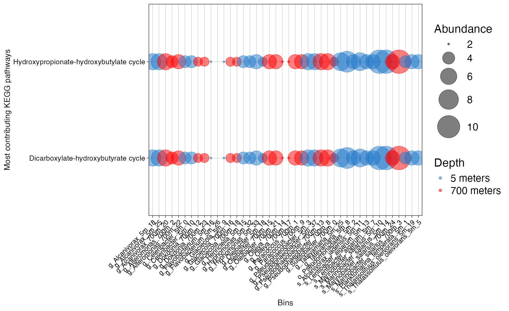
Figure 9. Presence of KEGG families across bins.
get_subset_discriminant
This vignette demonstrates how to:
get_subset_discriminant().The goal is to move from feature-level statistics to ecologically interpretable pathway-level patterns.
The KO table must:
"KO").rbims_pathway.The metadata must:
Bin_name column matching MAG column
names."Depth").This step is to check that the feature selected from the input table has no empty values and that the bin_names match perfectly with your metadata table.
stopifnot("KO" %in% names(ko_bin_mapp_renamed))
mag_cols <- ko_bin_mapp_renamed %>%
select(where(is.numeric)) %>%
names()
stopifnot(length(mag_cols) > 1)
stopifnot(all(c("Bin_name", "Depth") %in% names(metadata_renamed)))
metadata_use <- metadata_renamed %>%
select(Bin_name, Depth)
stopifnot(all(mag_cols %in% metadata_use$Bin_name))
stopifnot(nlevels(factor(metadata_use$Depth)) == 2)The get_subset_discriminant function processes your
feature matrix (KO x MAG) and associated metadata
(MAG → Group). It executes various discriminant
analysis methods—such as ALDEx2, Random
Forest, and Indicator Species—to build a
robust statistical consensus in disc_obj$consensus.
Multi-method Consensus: Reduces bias by combining frequentist and machine learning approaches.
Feature Selection: Highlights the specific KOs or MAGs driving the differences between your experimental groups.
In the ALDEx2 analysis, the sign of the effect size (positive vs. negative) is determined by the order of your factor levels. To ensure your results remain reproducible and easy to interpret, you should explicitly define your reference levels.
Note: Uncomment and adjust the order below to match your experimental convention (e.g., placing the “5m” group first as the baseline).
tibble_disc <- get_subset_discriminant(
tibble_rbims = ko_bin_mapp_renamed,
metadata = metadata_use,
analysis = "KEGG",
group_col = "Depth",
feature_col = "KO",
min_presence = 3,
score_min = 1
)
disc_obj <- attr(tibble_disc, "rbims_disc")Inspect score distribution:
disc_obj$consensus %>%
count(score)
#> # A tibble: 2 × 2
#> score n
#> <int> <int>
#> 1 0 3052
#> 2 1 372This allows to explore which are the specific features that are enriched in both experimental groups.
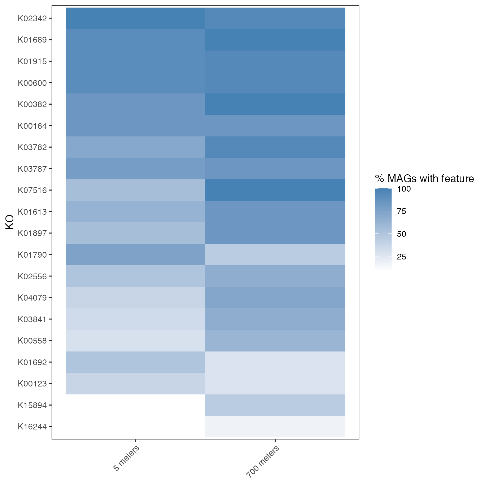
This allows to identify which features are significantly enriched in the second group. In this example, the top 3 KOs are the ones more abundant in the deep environment (700 m).
plot_disc_effect(disc_obj, top_n = 20)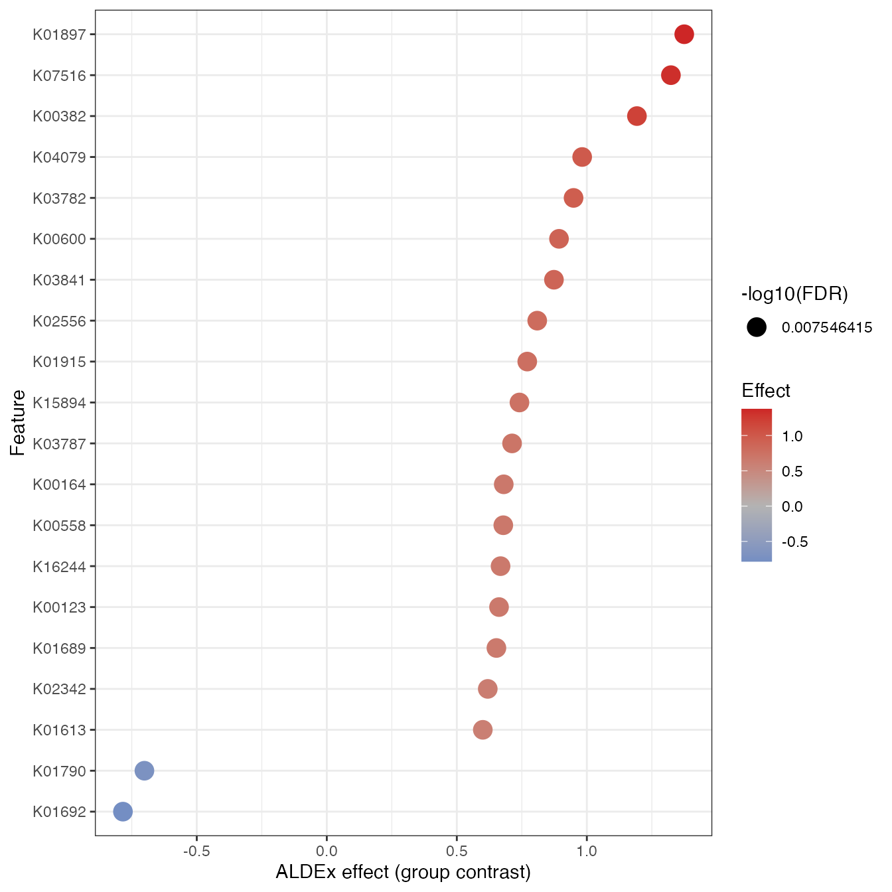
Individual KOs (KEGG Orthologs) may not always reach statistical significance on their own. However, an entire metabolic pathway can reveal a consistent biological signal when a large proportion of its constituent KOs shift in the same direction.
rbims_pathway (e.g., Hexadecane, Naphthalene,
or Phenanthrene degradation).Note: The two-sided CI is utilized for standard visual representation in figures, while the directional p-value specifically addresses the hypothesis: “Is this specific pathway significantly biased toward a positive effect?”
ko_dictionary <- make_ko_dictionary(
tibble_rbims = ko_bin_mapp_renamed,
feature_col = "KO"
)
pathways <- c("Hexadecane", "Naphthalene", "Phenanthrene")
pathway_tbl <- calc_pathway_directional_bias(
disc_obj = disc_obj,
ko_dictionary = ko_dictionary,
pathways = pathways,
p_null = 0.5,
p_alternative = "greater",
ci_two_sided = TRUE
)
pathway_tbl
#> # A tibble: 3 × 8
#> rbims_pathway x_pos n prop_pos ci_low ci_high p_value p_adj_fdr
#> <chr> <int> <int> <dbl> <dbl> <dbl> <dbl> <dbl>
#> 1 Phenanthrene 103 107 0.963 0.907 0.990 3.31e-26 9.92e-26
#> 2 Naphthalene 82 86 0.953 0.885 0.987 2.88e-20 4.32e-20
#> 3 Hexadecane 117 172 0.680 0.605 0.749 1.30e- 6 1.30e- 6
plot_pathway_directional_bias(
pathway_tbl,
reorder = TRUE,
show_fdr_label = TRUE
)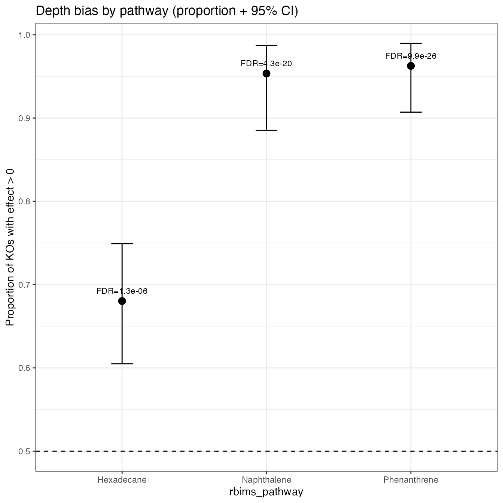